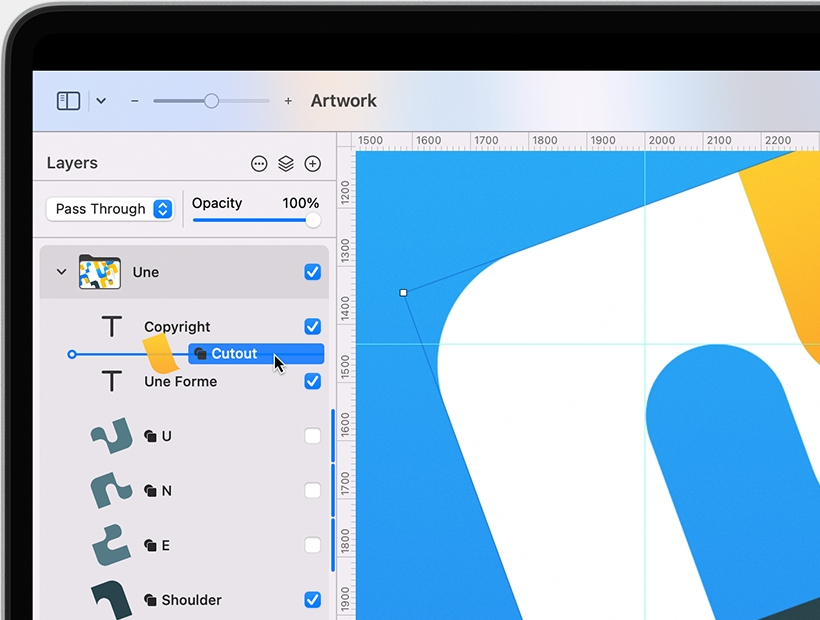
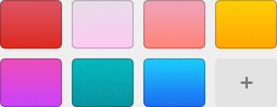
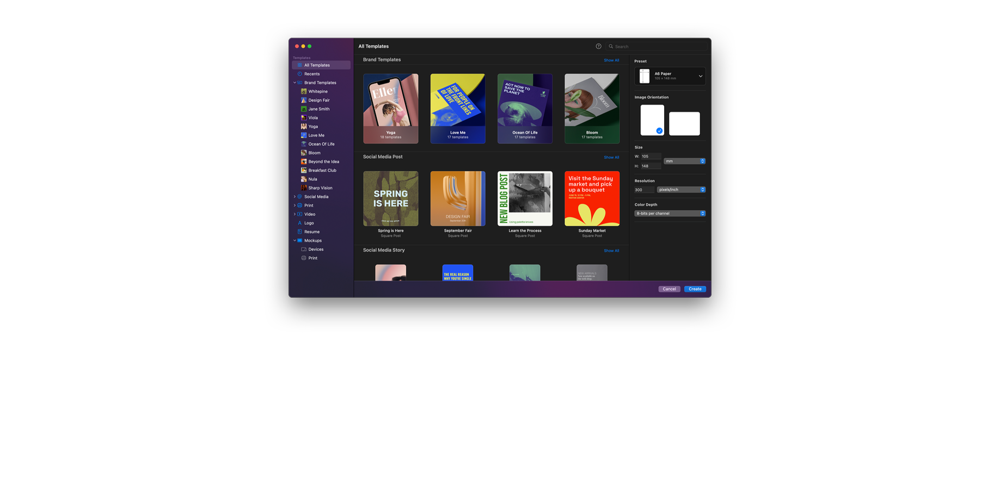
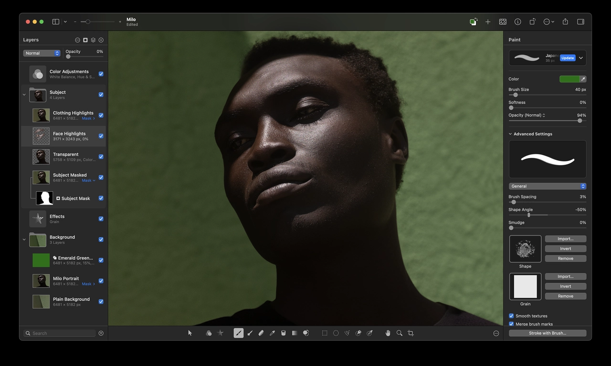
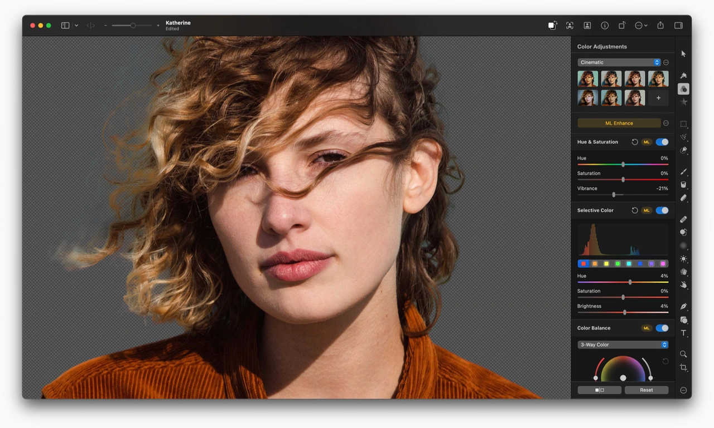
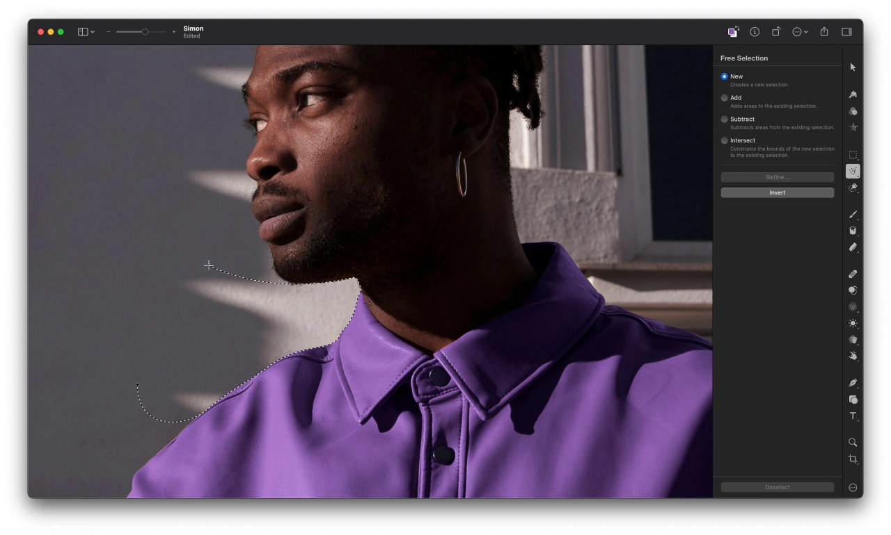
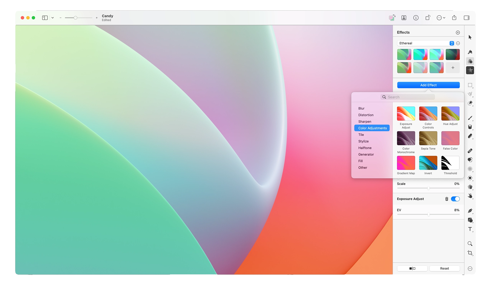
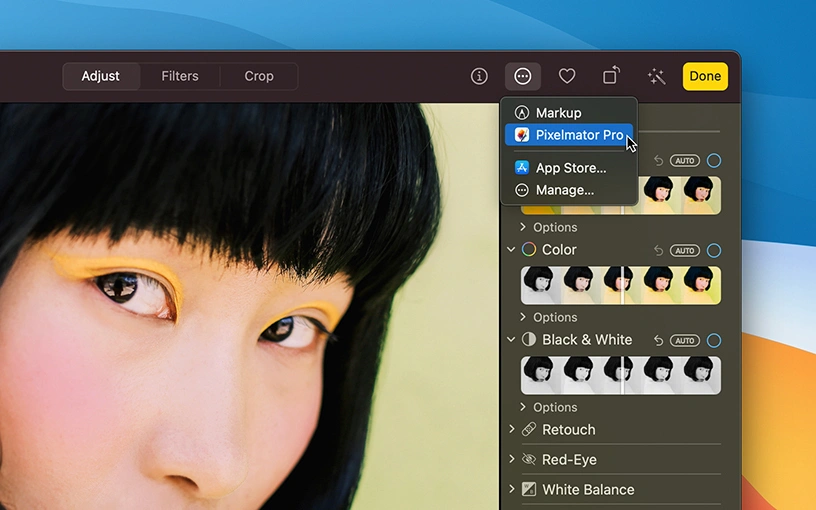

Professional image editing tools that anyone can use.
Pixelmator Pro és un editor d’imatges dissenyat per oferir les eines d’edició més potents i accessibles per a tothom. Amb una extensa col·lecció d’eines per editar i retocar fotos, crear dissenys gràfics, pintar, dibuixar gràfics vectorials i afegir efectes sorprenents, és l’únic editor d’imatges que necessites.
Draw and illustrate with a full collection of vector tools.
Pixelmator Pro comes with a full set of vector tools for creating resolution-independent designs. It includes easily-customizable smart shapes, a large collection of pre-designed shapes, and support for vector file formats including PSD, SVG, PDF, Adobe Illustrator, and Illustrator EPS.
Resolution Independent
Vector shapes are resolution-independent, so curves always look smooth and edges always stay sharp, no matter how much you resize each shape or even entire vector designs.
Vector Support
Pixelmator Pro supports vector file formats, including PSD, SVG, PDF, Adobe Illustrator, and Illustrator EPS, so you can effortlessly edit shapes and paths in these files, and export them while keeping all their vector data.
Smart Shapes
With a collection of pre-made Smart Shapes, you can quickly add star and various polygon shapes, arrows, speech bubbles, and other shapes to your compositions, then customize them in any way you want.
Powerful tools for perfecting your photos.
The collection of powerful, nondestructive color adjustments in Pixelmator Pro lets you edit the colors in your photos, or even videos, in any way you want. And with full support for RAW photos, a collection of stunning adjustment presets, and incredible retouching tools, it couldn’t be easier to turn good-looking photos spectacular.
Edit the colors in your photos in any way you want.
In Pixelmator Pro, you’ll find everything from essential color adjustments like brightness, contrast, and exposure to advanced tools like multi-channel curves and wheel-based color balance.
Enhance photos automagically.
Many of the most important adjustments can be applied automatically, using a machine learning algorithm trained on 20 million photos.
Perfect every detail.
Magically remove unwanted objects, clone parts of your photos, lighten or darken precise areas, and do much more. All by using simple brushstrokes to retouch just the areas you want, so all your shots look picture-perfect.
Effortless RAW editing.
Pixelmator Pro supports RAW photos from over 750 of the most popular digital cameras. What’s more, you can add RAW photos as RAW layers and edit directly without having to convert or preprocess them.
Make advanced color edits using color adjustments layers.
Use color adjustments layers to combine different color adjustments, selectively edit photos with incredible precision, and change the look of layered compositions with ease.
Whether you’re working on a design for a poster, a webpage, or a blockbuster app, you’ll make your ideas come to life in Pixelmator Pro. With smart spacing guides, advanced alignment tools, and blazing fast performance, you can harness the full power of layer-based editing.
Layer-Based Editing
Use simple buildings blocks – shape, text, video, and image layers – to create stunning compositions and designs. Add layers in delightfully quick and simple ways, such as by dragging and dropping them straight into Pixelmator Pro, or using the built-in Photo Browser.

The Arrange tool makes it incredibly easy to create designs. It lets you automatically select layers by clicking them on the canvas, intelligently snaps layers into position as you move them around, and even lets you align and distribute layers automatically.

Layer Styles
Nondestructively customize the look of any layer in your image by adding fills, strokes, and shadows, or any combination of multiple styles. And with presets, you can save your favorite combinations, use them in any of your images, and even share them with others.
Create stunning designs like a pro – even if you’re a beginner.
Create eye‑catching designs with ease using stunning design templates and see them come to life in beautiful, fully‑customizable mockups.

Choose a workspace that works for you.
Customize the Pixelmator Pro workspace to make it work for you — move the Tools and Layers sidebars wherever you want and completely customize the list of tools. Or choose one of the built-in presets created especially for photographers, designers, painters, and illustrators.

Remove the background from any image with just a click.
The jaw-dropping, Core ML-powered Remove Background feature removes the background from any image with just a click. Using a combination of machine-learning algorithms, Pixelmator Pro automatically selects the subject, refines the edges of the selection, then removes any traces of the previous background from the object’s edges.

Image editing powered by machine learning.
To deliver more intelligent image editing, Pixelmator Pro uses machine learning — a technology that allows computers to gain knowledge to perform specific tasks more like a person than a computer. Which enabled us to create features that have never before been possible.
ML Enhance
Automatically enhance photos like a pro photographer.
Super Resolution
Magically increase the resolution of images while preserving sharpness and details.
Match Colors
Quickly and easily match the colors and style of any photo.
Denoise
Effortlessly remove camera noise and image compression artifacts from photos.
Quick Selection Tool
Quickly make accurate selections with ease.
Crop
Improve the composition of photos with just a click.
Remove Background
Remove the background from any image with just a click.
Select Subject
Automatically select the subjects of images with ease.
Select and Mask Tool
Easily make advanced selections of challenging image areas like hair or fur.
Magically get rid of unwanted objects.
Make small imperfections or even entire objects disappear from your images by painting over them with the Repair Tool. No matter how complex the background, the Repair Tool can make almost any object vanish without a trace.
Edit your photos piece by piece. Or combine several photos into one.
With a collection of pixel-accurate selection tools powered by state-of-the-art technology, Pixelmator Pro lets you pick out and edit precise parts of your images with ease. So you can apply color adjustments and effects to specific areas. Select and copy objects from one image to another. Or focus all edits on a precise area without affecting the rest of the image.

Thanks to its advanced algorithm, the Quick Selection tool lets you easily select even the most challenging objects and areas with just a few brushstrokes.
Easily design
Using the powerful Type tools in Pixelmator Pro, you can easily design great-looking text in all your images. Effortlessly create curved text or type along shapes and paths. And use a full set of typography tools to customize text in any way you can imagine.
Type on a Path
Pixelmator Pro includes a range of intuitive and easy-to-use tools for designing curved and circular text. Use the Circular Type tool to create circular text, the Path Type tool to create path text, or type text around the edges of any default or even custom shape.
Real-time, nondestructive, blockbuster effects.
Pixelmator Pro comes with a collection of over 60 versatile effects that you can mix and combine to develop any artistic or special effects you can imagine. Effects are nondestructive, so you can always edit, rearrange, or remove an effect after applying it. And you can even apply multiple effects to a single layer — seeing all your changes in real time.

Turn your Photos app into an image editing powerhouse.
The Pixelmator Pro editing extension makes the entire Pixelmator Pro app and all its features available right inside Photos. So you can edit using Pixelmator Pro without ever leaving Photos, keeping all your nondestructive edits saved inside your library. Your Photos app is now a full-featured, layer-based image editor.

Advanced features for advanced workflows.
Pixelmator Pro is designed from the ground up to be easy to use for beginners. But it’s ready to progress with you as you start mastering image editing, so you’ll also find many advanced features like Export for Web, Soft Proofing, support for Adobe Photoshop files, color management, AppleScript, and more.
From its app icon and the way it looks and feels to the technologies it supports, Pixelmator Pro has been designed to be the ultimate Mac app. Enjoy full support for every Mac feature and technology you’d expect — iCloud, Versions, Shortcuts, Sidecar, Apple Pencil, and many others.
Universal App
iCloud Drive
Photos Extension
Retina Display
Light and Dark Appearance
Universal Control
Sidecar
Apple Pencil
Shortcuts
AppleScript
Versions
FaceTime Camera
Powered by the latest Mac technologies.
The Pixelmator Pro image editing engine is seriously sophisticated and incredibly powerful. It’s designed exclusively to take advantage of the full power of Mac computers, using advanced Mac graphics technologies like Metal and Core Image. Pushing the boundaries of image editing, Pixelmator Pro also includes machine learning-enhanced editing features powered by Core ML. So tools aren’t just blistering fast — they’re whip smart too.
Apple Silicon
Pixelmator Pro runs natively on Mac devices powered by Apple silicon, taking full advantage of its incredible performance.
Metal
Using Metal, Pixelmator Pro harnesses the full graphics processing power of every Mac.
Core ML
The groundbreaking machine learning features in Pixelmator Pro are integrated using Core ML, which brings the best possible ML processing performance on Mac.
Built with Swift
Swift is a modern programming language built for efficiency, reliability, and top-notch performance.
High-performance UI animations are powered by SwiftUI.
We know you'll love Pixelmator Pro. But don't take our word for it.
Pixelmator Pro has an average worldwide rating of 4.8 stars out of 5 with over 48,000 five-star ratings. It also has a Mac App of the Year award and proudly sports an Editors’ Choice badge on the Mac App Store. We think you’ll love it — and we’re not the only ones.
Awarded Mac App of the Year by Apple.
Highlighted as an Editors’ Choice on the Mac App Store.